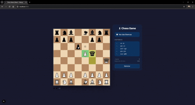

Sistema de RH
Sistema completo de Recursos Humanos desenvolvido com Laravel (PHP) no backend e Vue.js no frontend, com CRUD de colaboradores, rotas protegidas e APIs REST.

Desenvolvedor em formação com experiência em dados e integração de sistemas.
Ver ProjetosAqui você encontrará mais informações sobre mim, o que faço e minhas principais habilidades no mundo da programação e tecnologia.
Sempre fui apaixonado por tecnologia. Desde criança, sonhava em criar jogos e explorar esse universo. Aos 16 anos, conheci o curso técnico em Análise e Desenvolvimento de Sistemas na escola onde estudava. Entrei por curiosidade, mas logo me encantei de verdade pela programação.
Com o tempo, comecei a ver sentido em resolver problemas e sentir aquela satisfação ao encontrar soluções. Essa curiosidade evoluiu para uma carreira na área de tecnologia, onde hoje atuo com migração de dados em uma empresa de software, trabalhando com bancos de dados e Visual Basic, realizando análise, tratamento e integração de dados entre sistemas.
Essa experiência me proporcionou uma base sólida em SQL, manipulação de dados, lógica de programação e resolução de problemas, além de uma visão prática sobre integração de sistemas e processos empresariais.
Atualmente, sou estudante de Engenharia de Software e tenho grande interesse em desenvolvimento web, com foco em Full Stack Development. Venho estudando e desenvolvendo projetos utilizando tecnologias como React, Next.js, Vue.js, Nuxt, PHP, Laravel, JavaScript, HTML, CSS e Tailwind CSS.
Também possuo experiência com APIs REST, Git/GitHub e bancos de dados relacionais como MySQL, sempre buscando construir soluções eficientes, organizadas e escaláveis.
Grande parte do meu aprendizado foi construída de forma autodidata, através de cursos, documentação e prática constante com projetos próprios. Ao longo da minha trajetória, fui reconhecido por ser uma pessoa proativa, dedicada, colaborativa e com forte vontade de aprender — características que levo para todos os ambientes em que atuo.
Hoje, busco uma oportunidade como Desenvolvedor Web / Full Stack, onde eu possa aplicar meus conhecimentos, contribuir com projetos reais e continuar evoluindo profissionalmente.
Compartilho conteúdos sobre minha jornada no desenvolvimento web e aprendizado constante. Me acompanhe no LinkedIn e Instagram para acompanhar minha evolução e projetos.
ContatoTecnologias que uso no dia a dia e nas quais tenho experiência.
Aqui você encontrará alguns dos projetos que desenvolvi, cada um com foco em design, performance e experiência do usuário.
Sistema completo de Recursos Humanos desenvolvido com Laravel (PHP) no backend e Vue.js no frontend, com CRUD de colaboradores, rotas protegidas e APIs REST.

Template inicial para desenvolvimento com Vue 3 e Vite,
configurado para TypeScript e suporte a .vue,
visando agilizar novos projetos front-end.

Projeto de jogo de xadrez desenvolvido em React e Next.js, com tabuleiro interativo, movimentação de peças e regras básicas do jogo implementadas.